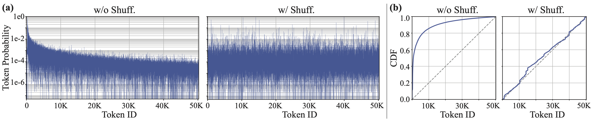
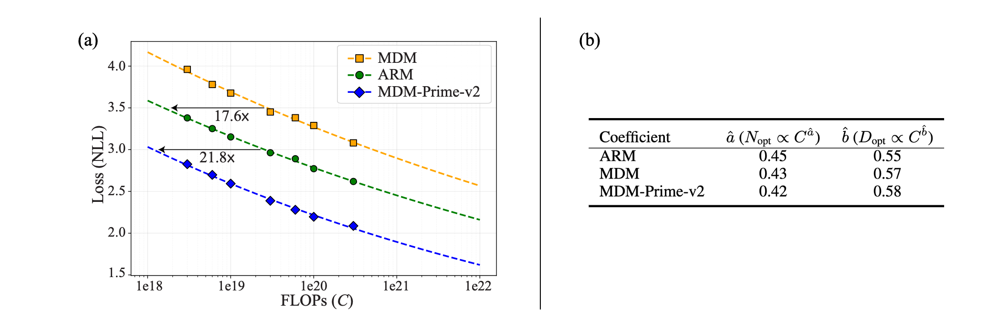
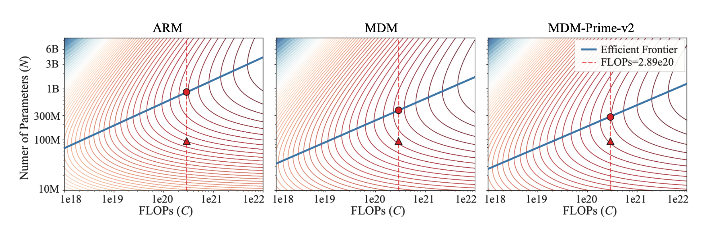
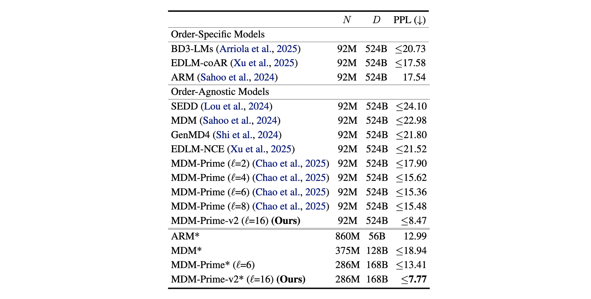
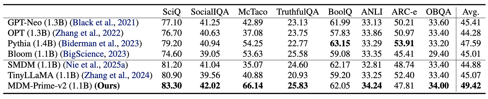

MDM-Prime-v2: Binary Encoding and Index Shuffling Enable
Compute-optimal Scaling of Diffusion Language Models

Figure 1. The loss envelops (upper subplots) and isoFLOP curves (lower subplots) of autoregressive models (ARM), masked diffusion models (MDM), and our MDM-Prime-v2 framework. In the upper subplots, the number of parameters ranges from 14M (purple) to 3.4B (yellow). In lower subplots, the compute budget ranges from $3\times 10^{18}$ to $3\times 10^{20}$ FLOPs.
Tightening Variational Bound via Subtokenizer
Masked diffusion models (MDM) minimize the variational upper bound of negative log-likelihood (NLL), i.e., $\EE_{q_\text{data}(\vx_0)}[-\log p(\vx_0)]$. Let $\vx_0\in \XX^L$ be a sequence of $L$ tokens and $q(\vx_t|\vx_0)$ be the forward diffusion kernel that masks a token with probability $1-\alpha_t$. The variational upper bound is written as follows:
$$ \begin{equation} \label{eq:diffusion_elbo} \begin{aligned} \mathcal{L}_\text{vb}=\int_0^1 \frac{\alpha'_t}{1-\alpha_t} \mathbb{E}_{q(\vx_t|\vx_0)}\left[\log p (\vx_0|\vx_t) \right] dt, \end{aligned} \end{equation} $$
where $\alpha_t'=\frac{d}{dt} \alpha_t$ and $p (\vx_0|\vx_t)$ is a parametric function.
The Partial masking scheme (Prime) generalizes Eq. (\ref{eq:diffusion_elbo}) by representing each token $\vx_0\in \XX^L$ as a sequence of $\ell$ sub-tokens $\vy_0\in \YY^{L\times\ell}$ via an invertible function $\ff_\ell$, known as subtokenizer. MDM-Prime approximates the same objective as MDM by substituting $\vx_0$ as $\vy_0$. The variational bound can be expressed as follows:
$$ \begin{equation} \label{eq:prime_elbo} \begin{aligned} \mathcal{L}_\text{vb}^{(\ell)}=\int_0^1 \frac{\alpha'_t}{1-\alpha_t} \mathbb{E}_{q(\vy_t|\vy_0)}\left[\log p_\ell (\vy_0|\vy_t) \right] dt, \end{aligned} \end{equation} $$
where $p_\ell (\vy_0|\vy_t)$ is MDM-Prime's parametric function.
This work shows that a proper design of $\ff_\ell$ leads to tightened variational bounds. To achieve this goal, MDM-Prime-v2 incorporates two techniques: (1) Set $\ell=\lceil \log_2 V\rceil$, under which $\ff_\ell$ performs binary encoding. (2) Employ an index shuffling operation to encode high-entropy sub-tokens.

Figure 2. Overview of MDM, MDM-Prime, and the MDM-Prime-v2 enhancements. $\ell$ is the token granularity in $\ff_\ell$ and $V$ is the vocabulary size.
$y_0^{i,j}$ is a sub-token with positional indices $i$ and $j$. The gray cell intensity in the lower section represents sub-token probability when $y_0^{i,j}=0$ or $1$.
Technique 1: Binary Encoding
We show that the variational bound of MDM-Prime is monotonically non-increasing with respect to $\ell$.
The theory indicates that diffusion processes with more fine-grained token representations have tighter bound. Based on this finding, we propose to select the maximum viable $\ell=\lceil \log_2 V\rceil$ such that $\ff_\ell$ encodes tokens into binary sub-tokens.
Technique 2: Index Shuffling
We show that the variational bound of MDM-Prime is minimized when the entropy of sub-tokens is maximized.
The $\ff_\ell$-independent term corresponds to the joint negative entropy $-\mathcal{H}(\vy_0, \vy_t) = -(\mathcal{H}(\vy_0) + \mathcal{H}(\vy_t | \vy_0))$, where $\mathcal{H}(\vy_0) = \mathcal{H}(\vx_0)$ remains constant due to the invertibility of $\ff_\ell$, while $\mathcal{H}(\vy_t | \vy_0)$ is determined solely by the forward kernel. On the other hand, the $\ff_\ell$-dependent term suggests that the optimal $\ff_\ell$ should maximize the entropy of $\vy_t$, which reaches its optimum when each unmasked $y_t^{i,j}$ is uniformly distributed on $\YY$.
Although Proposition 2 identifies high-entropy sub-tokens as the ideal case for optimality, the sub-tokens generated by directly applying base-$b$ encoding to the token indices from commonly-used Byte-Pair Encoding (BPE) tokenizers exhibit low entropy. This occurs since BPE is constructed by iteratively merging the most frequent subword pairs. As a result, token probability is inversely proportional to the token index (see the left subplots with title `w/o Shuff' in Fig. 3 (a) and (b)). Directly encoding these structured token indices using base-$b$ encoding results in sub-tokens with low entropy, contradicting the maximization goal.

Figure 3. (a) Token probability and (b) cumulative distribution function (CDF) over token indices of the GPT-2 tokenizer evaluated on the C4 dataset. The left and right subplots of (a) and (b) show setups without and with index shuffling, respectively. The gray dashed line in (b) represents the CDF of a uniform token distribution.
To effectively disrupt the inherent token index structure, we propose to randomly shuffle the token indices before performing base-$b$ encoding. This method leads to more uniformly distributed sub-tokens with higher entropy.
Implementation via Lookup Tables
The Techniques 1 and 2 suggest the following subtokenizer: $\ff_\ell= \ff_\text{base-$b$}\circ \ff_\text{shuffle}$, where $\ff_\text{base-$b$}$ performs binary encoding with $\ell=\lceil\log_2 V\rceil$, while $\ff_{\text{shuffle}}$ maps the original token indices into shuffled ones. The entire operation is implemented using lookup tables, requiring zero FLOPs and can be performed during data preprocessing. Fig. 4 shows an example of this operation.

Figure 4. (a) The subtokenizer $\ff_\ell$ in MDM-Prime-v2 is implemented via two lookup tables. (b) The NLL of MDM ($\ell=1$) and MDM-Prime ($\ell>1$) under three setups: `w/o Shuff.,' `w/ Shuff. (25%)', and `w/ Shuff.' $\lceil\log_2 V\rceil=16$ represents the maximum of $\ell$.
The red dashed line represent the NLL of the compute-optimal ARM. All models are trained using $10^{19}$ FLOPs. The experiments are conducted on C4 tokenized using GPT-2 tokenizer.
Experiments
Loss Behavior and Scaling Analysis
As established in (Kaplan et al. 2020; Hoffmann et al. 2022), the NLL of language models exhibits a strong correlation with the training FLOPs. This compute budget is primarily determined by two configuration factors: the total number of training tokens ($D$) and the number of non-embedding parameters ($N$). Fig. 1 presents the loss envelopes and isoFLOP curves for ARM, MDM, and MDM-Prime-v2. By analyzing the minima of the isoFLOP contours, we observe that MDM-Prime-v2 consistently achieves a lower compute-optimal loss than ARM and MDM. As shown in Fig. 5 (a), MDM-Prime-v2 is 21.8$\times$ more compute-efficient than ARMs.

Figure 5. (a) Compute-optimal scaling comparison between MDM, ARM, and MDM-Prime-v2. Markers represent the compute-optimal empirical samples, while dashed lines indicate the fitted power-law scaling curves. The arrows highlight the compute efficiency gains at a fixed loss level. (b) The coefficients ($\hat{a}$ and $\hat{b}$) derived using the Chinchilla scaling law. A larger $\hat{a}$ indicates that compute resources should prioritize model parameters, while a larger $\hat{b}$ indicates that compute resources should prioritize training tokens.
We then employ the Chinchilla scaling law to analyze loss behavior. Using our empirical observations, we fit the power-law loss estimator: $\hat{\mathcal{L}}(N,D) = E + \frac{A}{N^\alpha} + \frac{B}{D^\beta}$, where $\alpha,\beta,A,B$, and $E$ are coefficients determined via regression. Under a fixed compute budget $C \approx 6ND$, the optimal allocation of parameters ($N_{\text{opt}}$) and tokens ($D_{\text{opt}}$) is derived as follows:
$$ \begin{equation} \label{eq:scaling} \begin{aligned} N_{\text{opt}} = G \left( \frac{C}{6} \right)^{\hat{a}}, \quad D_{\text{opt}} = G^{-1} \left( \frac{C}{6} \right)^{\hat{b}}, \end{aligned} \end{equation} $$
where $G = \left( \frac{\alpha A}{\beta B} \right)^{\frac{1}{\alpha+\beta}}$, $\hat{a} = \frac{\beta}{\alpha+\beta}$, and $\hat{b} = \frac{\alpha}{\alpha+\beta}$. As shown in Fig. 5 (b), ARM exhibits the largest $\hat{a}$ and the smallest $\hat{b}$, indicating that the compute-optimal configuration of ARM prioritizes increasing model capacity ($N$) over data volume ($D$). In contrast, MDM-Prime-v2 yields the smallest $\hat{a}$ and the largest $\hat{b}$, suggesting that its compute-optimal performance is driven more by increasing training tokens than by expanding model parameters. These coefficients determine the compute-optimal frontier lines (i.e., the blue straight lines) illustrated in Fig. 6.

Figure 6. The isoloss curves of ARM, MDM, and MDM-Prime-v2. The solid blue line denotes the efficient frontier, and the red dashed line represents $2.89 \times 10^{20}$ FLOPs. Triangular markers represent the configuration used by (Sahoo et al. 2024), while circular markers denote the compute-optimal setup.
The ARM frontier is shifted toward larger models (upward/left), whereas the MDM-Prime-v2 frontier is shifted toward longer training (downward/right). These results serve as a diagnostic tool for compute efficiency. For example, a commonly-used training configuration in MDM research (Sahoo et al. 2024) adopts $N$=92M, $D$=524B ($2.89 \times 10^{20}$ FLOPs), which falls short of the compute-optimal frontier for all three models (as indicated by the gap between and in Fig. 6). To understand how this discrepancy affects model ranking, we offers a further analysis on the OpenWebText (OWT) benchmark.

Figure 7. Perplexity (PPL) evaluation on OWT. Methods marked with $\ast$ are trained with a compute-optimal setup, where the non-embedding parameters ($N$) and number of training tokens ($D$) are optimized based on the efficient frontier line presented in Fig. 6. The total compute is fixed at $2.89 \times 10^{20}$ FLOPs for all models.
As demonstrated in Fig. 7, ARM's PPL improves significantly, from 17.54 to 12.99 (i.e., the difference between ARM and ARM* is 4.55), simply by adjusting $N$ and $D$. In addition, the baseline configuration ($N$=92M, $D$=524B), which uses excessively large $D$, appears to inadvertently favor the MDM-based approaches, evidenced by the relatively small gains observed in MDM, MDM-Prime, and MDM-Prime-v2 when shifting to the compute-optimal setup. By calibrating all models to the compute-optimal setup, we establish a consistent and fair criterion for performance evaluation. Under this configuration, MDM-Prime-v2* outperforms ARM*, MDM-Prime*, and MDM* by noticeable margins of 5.22, 5.64, and 11.17 PPL, respectively.
Larger-Scale Pretraining
In this experiment, we adopt the training configuration of TinyLLaMA (ARM) (Zhang et al. 2024) and SMDM (MDM) (Nie et al. 2025) to train a 1.1B parameter model on 540B tokens from the Slimpajama dataset (totaling $3.3\times 10^{21}$ FLOPs). We compare the models on a wide-range commonsense reasoning tasks. The model architecture and tokenizer are based on LLaMA.

Figure 8. Zero-shot accuracies evaluated on eight commonsense reasoning benchmarks. Higher values correspond to better performance.
Fig. 8 presents the results. We compare our method against several pretrained ARM and MDM baselines of similar size: GPT-Neo (1.3B), OPT (1.3B), Pythia (1.4B), Bloom (1.1B), SMDM (1.1B), and TinyLLaMA (1.1B). MDM-Prime-v2 achieves the highest average accuracy across the tasks, outperforming these baselines on six of the eight tasks. In particular, our model demonstrates advantages in temporal reasoning and scientific question answering, delivering significant gains on the McTaco and SciQ benchmarks.
BibTeX
article{chao2026mdmprimev2,
title = {{MDM-Prime-v2: Binary Encoding and Index Shuffling Enable Compute-optimal Scaling of Diffusion Language Models}},
author = {Chen-Hao Chao, Wei-Fang Sun, Junwei Quan, Chun-Yi Lee, Rahul G. Krishnan},
year = {2026},
}
@inproceedings{chao2025mdmprime,
title = {{Beyond Masked and Unmasked: Discrete Diffusion Models via Partial Masking}},
author = {Chen-Hao Chao, Wei-Fang Sun, Hanwen Liang, Chun-Yi Lee, Rahul G. Krishnan},
booktitle = {Proceedings of the Conference on Neural Information Processing Systems (NeurIPS)},
year = {2025},
}